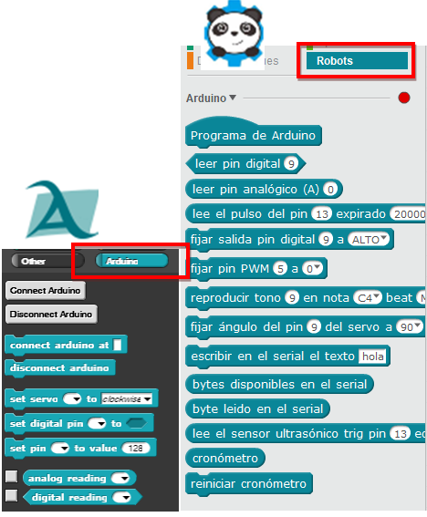
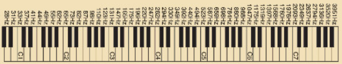
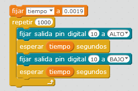

1.2.4.1 Instrucciones específicas para Arduino
Si entramos en la sección de instrucciones específicas para Arduino, en Snap4Arduino sólo tenemos las instrucciones básicas simples, a partir de estas piezas tienes que hacer el puzzle. Mientras que en mBlock tenemos más instrucciones que nos simplifican los programas pues la misma instrucción implican varias de las simples básicas:

Esto parece una tontería pero no lo es: por ejemplo, supongamos que queremos reproducir el tono C4 es más o menos 262Hz:

Luego tiempo que dura la onda es =1/262 = 0.0038 segundos es decir el tiempo de “encendido HIGH” es 0.0038/2= 0.0019seg y el tiempo de “apagado LOW” es 0.0035/2= 0.0019seg.
o sea… que para hacer esta instrucción en mBlock
necesitas hacer todo esto en Snap4Arduino :
